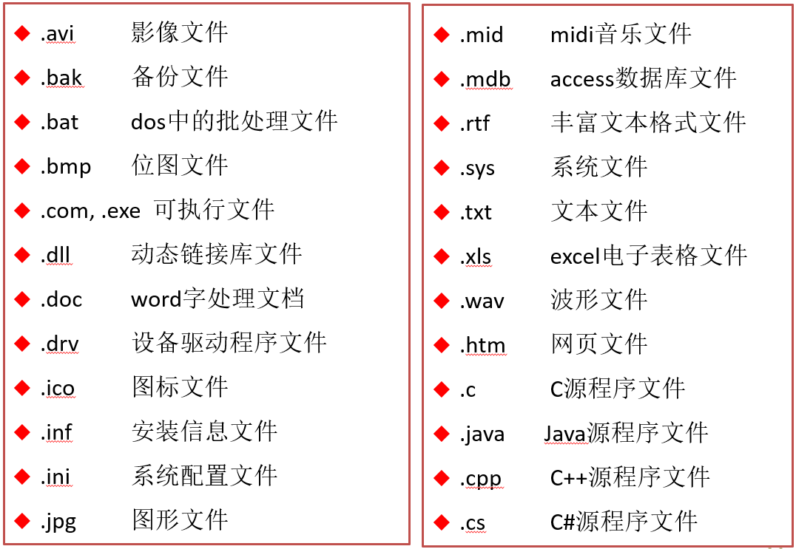
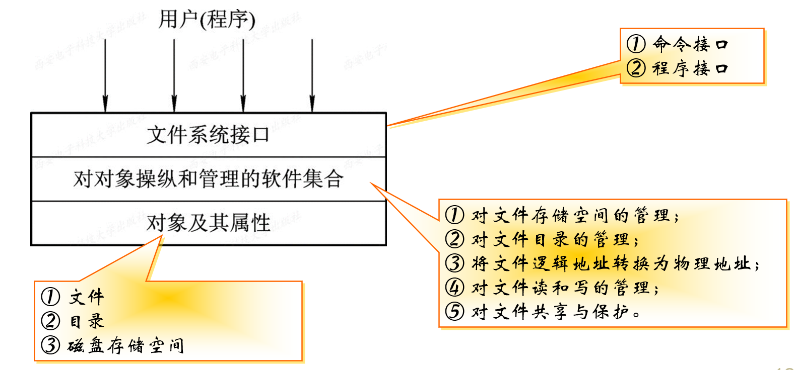
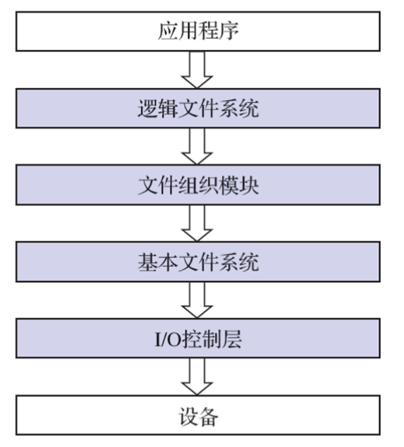
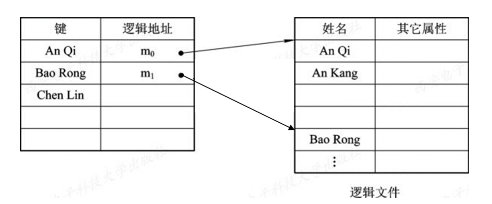
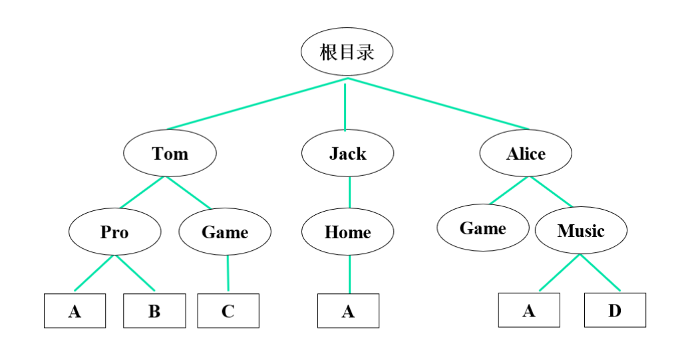
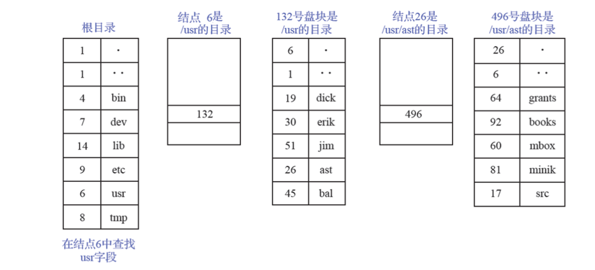
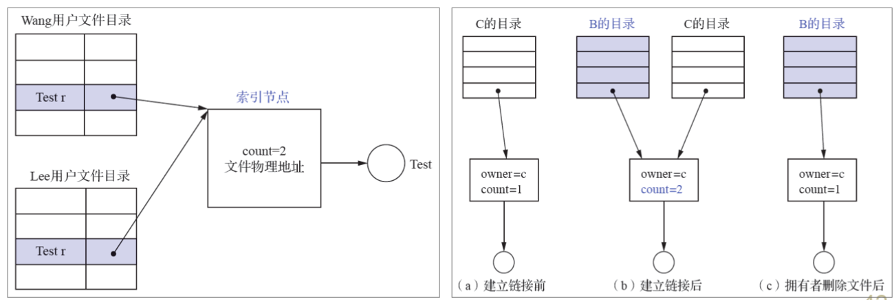
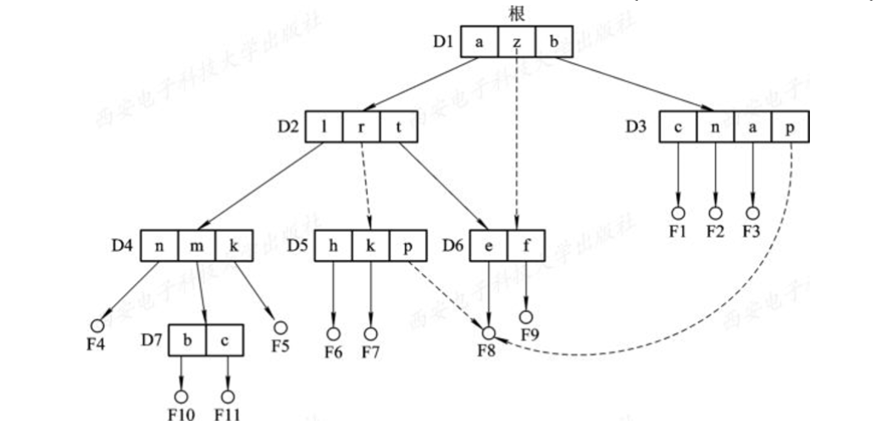
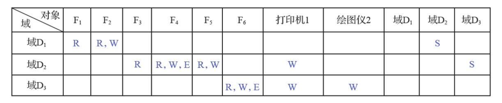

第一章 操作系统引论 第二章 进程的描述与控制 第三章 处理机调度与死锁 第四章 进程同步 第五章 存储器管理 第六章 虚拟存储器 第七章 输入/输出系统 第八章 文件管理 第九章 磁盘存储器管理
文件：一组带标识的在逻辑上有完整意义的信息项的序列，这个标识为文件名。主要属性：文件类型、文件长度、文件的物理位置、文件的建立时间
命名形式：文件名.扩展名，扩展名代表文件的类型

文件系统是操作系统中负责管理和存取文件信息的软件机构。
文件系统的组成：
文件系统的功能：对文件存储空间的管理、对文件目录的管理、用于将文件的逻辑地址转换为物理地址的机制、对文件读和写的管理、对文件的共享和保护
文件系统模型 
命令接口：指作为用户与文件系统直接交互的接口，用户可通过键盘终端键入命令取得文件系统的服务。 程序接口：指作为用户程序与文件系统的接口，用户程序可通过系统调用取得文件系统的服务
文件系统的层次结构 
顺序文件的排列方式：串结构（记录按存入先后顺序排列）、顺序结构（按关键字排列）。
优点是批量存取效率高；缺点是查找费时删除困难
按关键字建立索引，即为变长记录文件建立一张索引表，索引表按关键字排序，实现了直接存取。也可为顺序文件建立多个索引表，为每一个可能成为检索条件的域配置一张索引表。
索引顺序文件的特征：是对顺序文件的一种改进，基本上克服了变长记录的顺序文件不能随机访问，以及不便于记录的删除和插入的缺点。
保留了顺序文件的关键特征，即记录是按关键字的顺序组织起来的。增加了两个新特征：引入了索引表，通过该表可以实现对索引顺序文件随机访问；增加了溢出文件，用它来记录新增加的、删除的和修改的记录。
一级索引顺序文件 
如果在一个顺序文件中所含有的记录数为$N$，则为检索到具有指定关键字的记录，平均须查找$N/2$个记录；对于索引顺序文件，则为能检索到具有指定关键字的记录，平均只要查找$sqrt(N)$个记录数，因而其检索效率比顺序文件提高约$sqrt(N)/2$倍。
两级索引顺序文件：对于一个非常大的文件，为进一步提高检索效率，可以为顺序文件建立多级索引，即为索引文件再建立一张索引表，从而形成两级索引表。
直接文件：根据关键字直接获得指定记录的物理地址。即，关键字本身就决定了记录的物理地址。
目录管理四大基本功能：按名存取、检索速度、文件重名、文件共享
文件控制块(FCB)：文件控制块是OS为管理文件而设置的数据结构，存放了为管理文件所需的所有有关信息（文件属性）。FCB是文件存在的标志。
FCB的内容：
文件目录：把所有文件的FCB组织在一起，就构成了文件目录，即文件控制块的有序集合。 目录项：构成文件目录的项目（目录项就是FCB） 目录文件：为实现对文件目录的管理，通常将文件目录以文件的形式保存在外存，这个文件就叫目录文件。
目录结构类型：单级文件目录、二级文件目录、多级文件目录（树形目录）
树形结构目录几个概念：根目录、父目录、子目录、树叶（文件） 
路径名(path name)：从树的根（主目录）开始，把各级目录名与数据文件名依次地用 “/” 连接起来，即构成该数据文件唯一的路径名。绝对路径名：从树根直到树叶（数据文件）为止，包括各中间节点（目录）名的全部路径名；相对路径名：当前目录（工作目录）。
多级目录结构的特点：
目录查询技术：
/usr/ast/mbox的过程

有向无环图：树形目录中，允许一个文件有多个父目录。
利用索引节点实现共享，设置链接技术变量count 
基本思想：允许一个文件有多个父目录，但其中仅有一个作为主父目录，其他父目录都是通过符号链接方式与之链接的(简称链接父目录)。

系统创建一个
LINK类型的新文件，取名为F8_link，并将F8_link写入链接父目录D5中，以实现D5与文件F8的链接。在新文件F8_link中包含被链接文件F8的路径名。这样的链接方法被称为符号链接，新文件F8_link中的路径名则只被看做是符号链接。当用户通过D5访问F8且正要读LINK类新文件F8_link时，此要求被OS截断，OS根据新文件中的路径名去找到文件F8，实现共享。
影响文件安全性的主要因素：
一个进程能对某对象执行操作的权力，称为访问权(Access right)。
保护域简称为“域”，“域”是进程对一组对象访问权的集合，进程只能在指定域内执行操作。即规定了进程所能访问的对象和能执行的操作。
访问矩阵：用矩阵来描述系统的访问控制，行代表域，列代表对象，每一项为访问权
具有域切换权的访问控制矩阵：能够将进程从一个保护域切换为另一个域。如，由于域D1和D2所对应的项中有一个S（即切换权），则允许在域D1中进程切换到域D2中。 